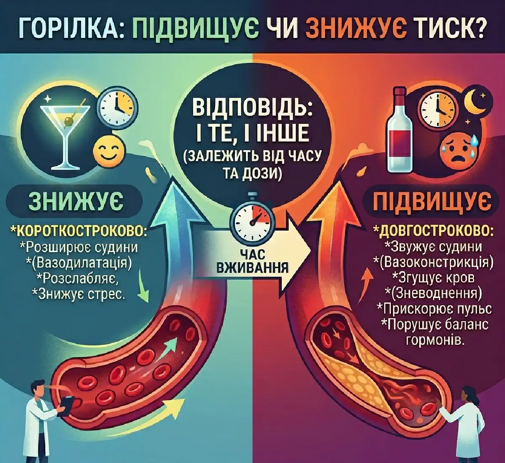

+38(068) 79 72 782
+38(068) 79 72 782Як горілка впливає на артеріальний тиск
Коли ризик вищий, ніж здається


Безкоштовна консультація, працюємо цілодобово 24/7
Коли ризик вищий, ніж здається

Питання про вплив горілки на артеріальний тиск залишається актуальним для багатьох людей, особливо тих, хто вже стикається з проблемами серцево-судинної системи. Існує поширена думка, що алкоголь здатний розширювати судини і тим самим знижувати тиск, створюючи відчуття полегшення. Однак у реальності вплив спиртного на організм набагато складніший і не завжди безпечний. Алкоголь має багаторівневий вплив: він зачіпає судинний тонус, роботу серця, нервову систему та обмінні процеси. На тлі цього ефекти можуть бути непередбачуваними і відрізнятися у різних людей. У когось спостерігається короткочасне зниження тиску, у інших — його різке підвищення вже через короткий час після вживання.
Горілка дійсно може викликати тимчасове розширення судин, що супроводжується відчуттям тепла і розслаблення. Але цей ефект нетривалий і швидко змінюється зворотною реакцією організму — звуженням судин, почастішанням серцебиття і зростанням тиску. Горілка здатна як знижувати, так і підвищувати артеріальний тиск, причому ці зміни можуть відбуватися протягом одного епізоду вживання. Все залежить від дози алкоголю, загального стану здоров’я, віку, наявності хронічних захворювань та індивідуальної реакції організму.
Після вживання горілки в організмі запускається цілий комплекс фізіологічних реакцій, що зачіпають судини, серце та нервову систему. Однією з перших реакцій є короткочасне розширення судин, через що може спостерігатися тимчасове зниження артеріального тиску. У цей момент людина нерідко відчуває приплив тепла, розслаблення м’язів, легкість у тілі та навіть суб’єктивне поліпшення самопочуття. У деяких людей з’являється відчуття, що алкоголь «допоміг» знизити тиск і зняти напругу.
Однак такий ефект є оманливим і вкрай нетривалим. По мірі переробки алкоголю в організмі активуються компенсаторні механізми, спрямовані на відновлення нормального судинного тонусу. У відповідь на розширення судин відбувається їх рефлекторне звуження (спазм), що призводить до зворотного ефекту — підвищення артеріального тиску. При цьому стрибок тиску може бути більш вираженим, ніж вихідні показники до вживання алкоголю.
Додатково етанол впливає на центральну нервову систему і гормональну регуляцію, викликаючи викид стресових гормонів, таких як адреналін. Це призводить до почастішання серцебиття, посилення навантаження на міокард і підвищення судинного опору. Серце починає працювати в більш напруженому режимі, що особливо небезпечно для людей з уже існуючими проблемами серцево-судинної системи. Порушується і природна регуляція судинного тонусу, через що коливання тиску стають більш різкими і непередбачуваними. У деяких людей це може проявлятися чергуванням слабкості, запаморочення і різких підйомів тиску, що погіршує загальне самопочуття і підвищує ризик ускладнень.
Алкоголь чинить комплексний вплив на нервову систему і судини, безпосередньо впливаючи на їх тонус і здатність до регуляції. На першому етапі після вживання відбувається розслаблення гладкої мускулатури судинних стінок, що призводить до їх розширення і короткочасного зниження артеріального тиску. Цей ефект супроводжується відчуттям тепла, розслаблення і суб’єктивного поліпшення самопочуття. Однак такий ефект є тимчасовим. По мірі того як організм починає переробляти етанол, вмикаються захисні та компенсаторні механізми, спрямовані на відновлення нормального стану. У цей момент активується симпатична нервова система — частина нервової системи, що відповідає за реакцію «стресу» і мобілізацію ресурсів організму.
Відбувається викид адреналіну та інших стресових гормонів, що призводить до почастішання серцебиття, посилення роботи серця і підвищення судинного тонусу. Судини починають звужуватися, зростає периферичний опір, і в результаті артеріальний тиск підвищується. Крім того, порушується природна регуляція судинного тонусу, через що реакції організму стають менш стабільними. Тиск може коливатися, що створює додаткове навантаження на серцево-судинну систему і погіршує загальне самопочуття.
Двоїстий ефект алкоголю зумовлений його комплексним впливом на судинну систему, центральну нервову регуляцію та нейромедіаторний баланс. На початковому етапі після вживання етанол викликає розслаблення гладкої мускулатури судин, що призводить до їх розширення і короткочасного зниження артеріального тиску. У цей період людина може відчувати приплив тепла, розслаблення, легкість у тілі та суб’єктивне поліпшення самопочуття. У декого створюється враження, що алкоголь «знижує тиск» і чинить позитивний ефект. Однак даний ефект є короткочасним і фізіологічно нестабільним. По мірі переробки алкоголю в організмі починають активно вмикатися компенсаторні механізми, спрямовані на відновлення гомеостазу. Ключову роль у подальшому підвищенні тиску відіграє зміна нейромедіаторної активності, зокрема посилення збудливих процесів у центральній нервовій системі.
Одним із центральних механізмів є підвищення активності глутаматергічної системи. Глутамат — основний збудливий нейромедіатор мозку, і його підвищений рівень призводить до посилення нейронної активності. Одночасно з цим знижується гальмівний вплив ГАМК (гамма-аміномасляної кислоти), яка в нормі відповідає за «стримування» збудження. Таке зміщення балансу в бік збудження призводить до гіперактивації нервової системи.
На цьому тлі активується симпатична нервова система — запускається так звана стрес-реакція організму. Збільшується викид адреналіну і норадреналіну, почастішає серцебиття, посилюється скоротливість міокарда і зростає тонус судин. Це призводить до їх звуження, збільшення периферичного опору і, як наслідок, підвищення артеріального тиску. Порушується нормальна регуляція судинного тонусу, що робить реакції організму менш передбачуваними. Тиск може коливатися, а судини втрачають здатність швидко адаптуватися до змін. Це створює додаткове навантаження на серцево-судинну систему і підвищує ризик ускладнень.
При гіпертонії вживання горілки вкрай небажане, оскільки алкоголь чинить прямий і багаторівневий вплив на механізми регуляції артеріального тиску. Етанол впливає як на судинний тонус, так і на роботу центральної нервової системи, що робить реакцію організму нестабільною і потенційно небезпечною. Навіть невеликі дози спиртного можуть спровокувати різкі коливання тиску, викликати його стрибок і призвести до погіршення загального самопочуття.
Основна проблема полягає в тому, що алкоголь порушує природну регуляцію судин: спочатку викликає їх розширення, а потім — компенсаторне звуження. На цьому тлі посилюється навантаження на серце, активується симпатична нервова система і відбувається викид стресових гормонів, таких як адреналін. Все це призводить до підвищення артеріального тиску і додаткового перевантаження серцево-судинної системи.
Особливу небезпеку становить непередбачуваність реакції організму. У одних людей тиск може підвищуватися практично відразу після вживання, у інших — через деякий час, але при цьому стрибок може бути більш різким і вираженим. Такі коливання створюють серйозне навантаження на судини, порушують їхні адаптаційні можливості та підвищують ризик ускладнень, особливо при вже наявній гіпертонії. Регулярне вживання алкоголю посилює перебіг захворювання. З часом знижується ефективність гіпотензивних препаратів, оскільки алкоголь порушує їх всмоктування, метаболізм і дію. Це може призвести до того, що звичні схеми лікування перестають працювати, а контроль тиску стає нестабільним.
Зростає ризик розвитку гіпертонічних кризів — гострих станів, що супроводжуються різким підвищенням тиску, сильним головним болем, шумом у вухах, запамороченням і погіршенням загального стану. Такі епізоди можуть становити серйозну загрозу для здоров’я і потребують медичного втручання. У людей з гіпертонією алкоголь також сприяє пошкодженню судинної стінки, знижує її еластичність і прискорює процеси атеросклерозу. У довгостроковій перспективі це підвищує ризик розвитку інфаркту, інсульту та інших серцево-судинних ускладнень.
У людей зі зниженим артеріальним тиском вживання алкоголю нерідко супроводжується короткочасним суб’єктивним поліпшенням самопочуття. Це пов’язано з тим, що на початковому етапі етанол викликає розширення судин, покращує периферичний кровообіг і створює відчуття тепла, розслаблення і легкості в тілі. У деяких людей може навіть виникати ілюзія припливу енергії або «нормалізації» стану, через що формується помилкова думка, що алкоголь здатний підвищувати тонус організму.
Однак подібний ефект є оманливим і вкрай нетривалим. По мірі метаболізму алкоголю в організмі вмикаються компенсаторні реакції, які порушують нормальну регуляцію судинного тонусу. В результаті замість очікуваного поліпшення розвивається зворотний процес — погіршення самопочуття і посилення симптомів гіпотонії. Після фази розслаблення людина може зіткнутися з вираженою слабкістю, запамороченням, потемнінням в очах, хиткістю ходи та відчуттям «ватних» ніг. Знижується концентрація уваги, погіршується працездатність, з’являється відчуття втоми і розбитості. У ряді випадків можливе різке падіння артеріального тиску, що супроводжується переднепритомним станом або навіть втратою свідомості.
Негативним фактором є зневоднення організму, яке розвивається під впливом алкоголю. Етанол має діуретичний ефект, посилюючи виведення рідини, що призводить до зниження об’єму циркулюючої крові. Це ще більше посилює гіпотонію і посилює такі симптоми, як слабкість, запаморочення і загальне погіршення стану. Також варто враховувати, що алкоголь порушує роботу вегетативної нервової системи, яка відповідає за підтримку стабільного тиску. Це робить реакції організму більш нестабільними і посилює коливання показників.
Вживання горілки нерідко супроводжується вираженими і різкими коливаннями артеріального тиску. Це пов’язано з двоїстою дією алкоголю на судини і нервову систему: спочатку відбувається їх розширення, а потім — компенсаторне звуження. В результаті тиск стає нестабільним, може резко знижуватися, а потім так само резко підвищуватися.
Такі стрибки створюють значне навантаження на серцево-судинну систему. Серце змушене працювати в умовах постійних змін судинного тонусу, що призводить до почастішання пульсу, підвищення тиску і збільшення потреби міокарда в кисні. Подібні перевантаження особливо небезпечні при вже наявних порушеннях. Особливу загрозу такі коливання становлять для людей із захворюваннями серця і судин — гіпертонією, ішемічною хворобою, атеросклерозом. У цих випадках навіть короткочасні зміни тиску можуть спровокувати погіршення стану, викликати напади, аритмії або інші ускладнення.
Алкоголь чинить виражений і багаторівневий вплив на серцево-судинну систему, у тому числі безпосередньо на роботу серця. Після вживання горілки активується симпатична нервова система, збільшується викид адреналіну та інших стресових гормонів, що призводить до почастішання серцевих скорочень і підвищення навантаження на міокард. Одночасно етанол чинить прямий токсичний вплив на серцевий м’яз, порушуючи його нормальне функціонування.
На цьому тлі серце починає працювати в більш напруженому режимі: збільшується потреба міокарда в кисні, погіршується його кровопостачання, а ефективність скорочень може знижуватися. Це створює умови для виникнення функціональних порушень і погіршення загального стану. У деяких людей з’являються суб’єктивні відчуття перебоїв — «замирання» серця, нерегулярний ритм, прискорений пульс або відчуття дискомфорту в області грудної клітки.
Додатково алкоголь порушує електричну провідність серця, що може провокувати різні види аритмій. Такі зміни особливо небезпечні, оскільки вони можуть виникати раптово і супроводжуватися погіршенням кровообігу, слабкістю, запамороченням та іншими симптомами. Особливу загрозу такі ефекти становлять для людей з уже наявними серцево-судинними захворюваннями — гіпертонією, ішемічною хворобою серця, порушеннями ритму. У цих випадках навіть незначний додатковий вплив може стати фактором, що провокує загострення або погіршення перебігу захворювання. Навіть невеликі дози горілки за наявності таких патологій можуть викликати виражену реакцію організму, призвести до посилення симптомів, нестабільності тиску і загального погіршення самопочуття.
При регулярному вживанні горілки відбувається поступове і системне порушення механізмів, що відповідають за регуляцію артеріального тиску. Організм втрачає здатність гнучко адаптуватися до змін судинного тонусу, через що тиск стає нестабільним, схильним до частих коливань і різких стрибків. З часом такі порушення закріплюються і можуть призводити до формування стійкої хронічної гіпертонії.
Алкоголь чинить комплексний вплив на кілька ключових систем організму. Він впливає на центральну нервову систему, порушує гормональну регуляцію і змінює стан судинної стінки. В результаті збивається баланс між процесами розширення і звуження судин. Постійна активація симпатичної нервової системи, що супроводжується викидом адреналіну та інших стресових гормонів, призводить до стійкого підвищення тиску і збільшення навантаження на серцевий м’яз.
Додатково порушується робота ендотелію — внутрішнього шару судин, який відіграє важливу роль у підтримці їхньої еластичності та нормального кровотоку. Під впливом алкоголю судити втрачають гнучкість, стають більш жорсткими, а їхня реакція на зміни тиску погіршується. Це створює умови для формування судинних порушень і подальшого прогресування гіпертонії. Регулярне вживання горілки також прискорює розвиток атеросклеротичних процесів. Пошкодження судинної стінки сприяє відкладенню холестерину і формуванню бляшок, що призводить до звуження просвіту судин і погіршення кровообігу. В результаті підвищується ризик тромбозів, порушень кровопостачання органів і розвитку хронічних судинних захворювань. На тлі цих змін значно зростає ймовірність серйозних серцево-судинних ускладнень, включаючи ішемічну хворобу серця, інфаркт міокарда та інсульт. При цьому небезпека полягає в тому, що на ранніх етапах симптоми можуть бути слабо виражені або відсутні зовсім, тоді як патологічні процеси вже активно розвиваються.
Існує поширене забивання, що горілка нібито «корисна» для судин і здатна їх «очищати». Цей міф часто пов’язаний з відчуттям короткочасного розширення судин після вживання алкоголю, яке сприймається як позитивний ефект. Однак такі уявлення не мають наукового підтвердження і можуть вводити в небезпечну оману.
На практиці алкоголь не має лікувальної дії щодо судинної системи. Навпаки, його регулярне вживання призводить до порушення нормальної роботи судин, погіршує їхню здатність до адаптації та знижує еластичність судинної стінки. Під впливом етанолу відбувається пошкодження ендотелію — внутрішнього шару судин, який відіграє ключову роль у підтримці нормального кровотоку і регуляції тиску.
З часом такі зміни сприяють розвитку атеросклерозу, погіршенню кровообігу і підвищенню ризику утворення тромбів. Також алкоголь порушує баланс між процесами розширення і звуження судин, що призводить до нестабільності артеріального тиску і додаткового навантаження на серце. Користь алкоголю для серцево-судинної системи не доведена. Навпаки, численні дослідження підтверджують його негативний вплив: збільшення ризику гіпертонії, ішемічної хвороби серця, інсульту та інших серйозних захворювань.
Звернутися за медичною допомогою необхідно при появі таких симптомів:
Такі ознаки можуть вказувати на серйозні порушення в роботі серцево-судинної системи і потребують своєчасного медичного втручання. Ігнорування симптомів може призвести до прогресування стану, розвитку ускладнень і підвищення ризику небезпечних для життя ситуацій.
Кваліфіковану допомогу можна отримати в найкоротші терміни в таких містах, як (Київ | Харків | Одеса | Дніпро | Львів | Запоріжжя | Черкаси) та інших регіонах. Своєчасне звернення до фахівців дозволяє швидко стабілізувати стан, знизити ризики та уникнути важких наслідків для здоров’я.

Так, ми суворо дотримуємося повної конфіденційності на всіх етапах лікування. Інформація про пацієнта, діагноз та проходження терапії не передається третім особам. Звернення до нас не тягне за собою постановку на облік. Ви можете бути впевнені у безпеці та анонімності.
Програма лікування розробляється індивідуально після консультації з фахівцем. Враховуються вид залежності, її тривалість, фізичний та психологічний стан пацієнта. Такий підхід дозволяє підвищити ефективність терапії та знизити ризик зриву. Ми не використовуємо шаблонні рішення.
Так, ми супроводжуємо пацієнтів і після основного курсу лікування. Проводяться консультації, рекомендації щодо адаптації та профілактики рецидивів. За потреби можлива подальша психологічна підтримка. Це допомагає зберегти результат та повернутися до повноцінного життя.
Номер телефону:
+380 (68) 797 27 82
+380 (50) 021 69 57
Адресу наркологічного центра вашого міста уточнюйте за
телефоном
Працюємо: Київ, Одеса, Львів, Харків, Дніпро, Запоріжжя,
Черкасах, Чугуєві, Чорноморську, Кам'янському
Telegram: t.me/umbrellaplus
Графік работы: Цілодобово